Nmap - Network Scanner
Uploaded : Sept 06 2021
Nmap is a free open-source network scanning tool. Nmap is used to discover hosts and services on a computer network by sending packets and analyzing the responses. Nmap provides a number of features for probing computer networks, including host discovery and service and operating system detection.Nmap runs on all major computer operating systems, and official binary packages are available for Linux, Windows, and Mac OS X. For more info visit nmap.org.
Host Scan
Host scan is used by penetration tester to identify active host in a network by sending ARP request packets to all system in that network. As result it will show a message "Host is up" by receiving MAC address from each active host.
Syntax:
nmap -sP "Target IP range"
nmap -sn "Target IP range"
Above syntax describes how to execute a host scan, to discover live hosts in a network by using Nmap. In Kali Linux nmap is already installed so you just need to open your terminal and type the following command.
Command:
nmap -sP 192.1612.0.1-255
In this screenshot you can observe that all the available hosts are show in the result with their local ip and mac address
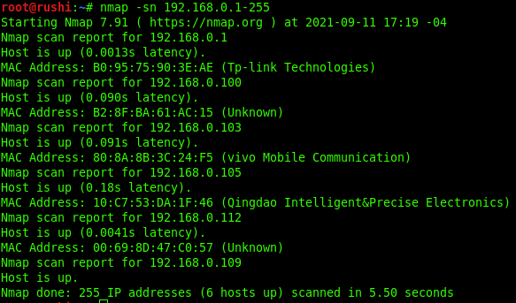Port Scan /TCP scan
So here comes the main part "Port Scanning", If you want to identify that which ports are open on the target network or machine then you should go with the nmap port scan.
Port Status:
1. Open: This indicates that an application is listening for connections on this port.
2. Closed: This indicates that the probes were received but there is no application listening on this port.
3. Filtered: This indicates that the probes were not received and the state could not be established. It also indicates that the probes are being dropped by some kind of filtering.
4. Unfiltered: This indicates that the probes were received but a state could not be established.
5. Open/Filtered: This indicates that the port was filtered or open but Nmap couldn?t establish the state.
6 .Closed/Filtered: This indicates that the port was filtered or closed but Nmap couldn?t establish the state.
Syntax:
nmap -p [port number] "target ip"
nmap -sT [port number] "target ip"
Above command will try to connect with port 120 as result if port is open then it will display state "open" as well as "service" running on that particular port.
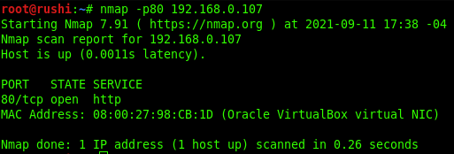So as show in the above screenshot, we can see the port 120 is open and HTTP service is running on it, which is a normal webpage.We used -p flag to perform scan on a perticular port which was port 120.
Port List
Command:
nmap -p120,22,120120,145 192.1612.0.107
If you testers want to scan more than one port of target then you should go with Port list scan where you can add multiple ports for scanning. This scan is quite useful to identify state of multiple selected ports which also describe status "host is up" if any single port is found to be opened.
Port Range
Using port range scan you can scan a particular range of ports of target network as per your requirement. For example: I want to scan all ports between port number 1 to port number 6000 then i'll use -p1-6000. Full command shown below.
Command:
nmap -p1-6000 192.1612.0.107
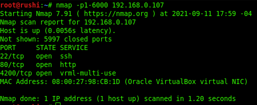In the screenshot above we can see the nmap scan is done in the port range between 1 to 6000 and if any ports within this range are open they are showed in the result. In our case we can see port 22,120 and 4200 are open.
If you want to scan all 65535 ports, then you should execute given below command which will enumerates the open ports of target system:
Command:
nmap -p- 192.1612.0.107
Basically -p- flage means all port scan and the total number of ports are 65535.
Specific Port by Service name
If you don?t known accurate port number for enumeration then you can also mention service name for port state scanning.
Syntax:
nmap -p[service-name] [taregt-IP]
From given image you can observe that same result has been obtained by executing above command without referring any port number.
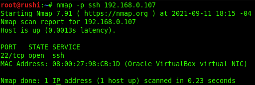OS Detection Scan
Apart from open port enumeration nmap is quite useful in OS fingerprinting. This scan very helpful to penetration tester in order to conclude possible security vulnerabilities and determining the available system calls to set the specific exploit payloads.
Syntax:
nmap -O [taregt-IP]
Above command will dump following information:
Device type: All fingerprints are classified with one or more high-level device types, such as router, printer, firewall, general purpose. These are further described in the section called "Device and OS classification (Class lines)". If you notice given below image here "Device Type: general purpose".
Running: This field is also related to the OS classification scheme described in the section called "Device and OS classification (Class lines)". It shows the OS Family (Linux in this case) and OS generation if available. If there are multiple OS families, they are separated by commas. When Nmap can't narrow down OS generations to one specific choice, options are separated by the pipe symbol ("|") Examples include OpenBSD 3.X, NetBSD 3.X|4.X and Linux 2.4.X|2.5.X|2.6.X.
OS CPE: This shows a Common Platform Enumeration (CPE) representation of the operating system when available. It may also have a CPE representation of the hardware type. OS CPE begins with cpe:/o and hardware CPE begins with cpe:/h.
OS details: This line gives the detailed description for each fingerprint that matches. While the Device type and Running lines are from predefined enumerated lists that are easy to parse by a computer, the OS details line contains free-form data which is useful to a human reading the report. This can include more exact version numbers, device models, and architectures specific to a given fingerprint.
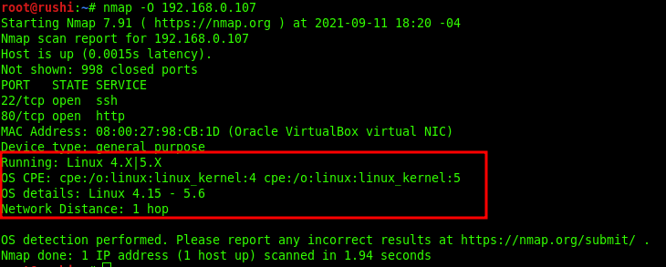In case OS detection fails, you can use the argument -osscan-guess to try to guess the operating system:
Syntax:
nmap -O --osscan-guess [taregt-IP]
Version Scan
While doing vulnerability scan on network devices you really want to know what services and version are running on perticular target or network. Having can accurate version number can helps us to obtain information, known exploits and vulnerabilities. For example vsftpd service is running target machine and the version of that service is 2.3.4 and we know that this version is vulnerable to Backdoor Command Execution and we can easily exploit this service with the help of available exploits. Version scan is also categories as "Banner Grabbing" in penetration testing.
Syntax:
nmap -sV [taregt-IP]
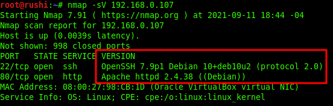From the give image you can see that it has shown current version of running service. Additional information will be enclosed in parenthesis.
Fast Scan
Syntax:
nmap -F [taregt-IP]
From given below image you can observe scanned time: 7.212 seconds where as in above scanning method [protocol scan] scanned time: 0.26 seconds.
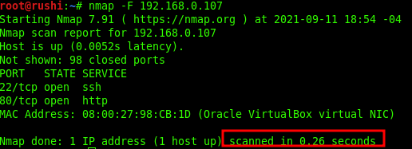Time difference is not that much big because i am scanning locally, but there will be a huge difference if you scanned machines over WAN.
Timing Tamplet Scan
The main timing option is set through the -T parameter if you may want more control over the timing in order get the scan over and done with quicker. However, Nmap adjusts its timings automatically depending on network speed and response times of the victim
Nmap offers a simpler approach, with six timing templates. You can specify them with the -T option and their number (0-5) or their name as shown below:
T0: Paranoid
T1: sneaky
T2: polite
T3: normal
T4: aggressive
T5: insane
Syntax:
nmap -T4 [taregt-IP]
Above command will perform aggressive scan and reduce scanning timing for enumeration of target?s system, here from given below image you can observe scanned time: 0.39 seconds.
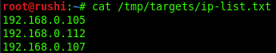Exclude Scan
There will be circumstances where host exception is required to avoid scanning of certain machines. For example i am doing nmap scanning on local hosts and i dont want to scan my host so in that case i'll use --exclude flag. So basically exclude help you to eliminate a host or list of hosts from complete network scan.
Syntax:
nmap [ip-range] --exclude [exclude-ip]
So in the command below i am scanning all ip's between ip-range 192.1612.0.1-255 expect IP 192.1612.0.109.
Command:
nmap 192.1612.0.1-255 --exclude 192.1612.0.109
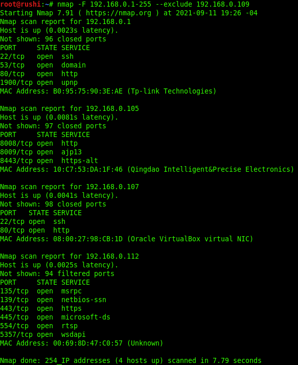Agressive Scan
This option enables additional advanced and aggressive options. Presently this enables OS detection (-O), version scanning (-sV), script scanning (-sC) and traceroute (-traceroute). This option only enables features, and not timing options (such as -T4) or verbosity options (-v) that you might want as well. You can see this by using one of the following commands:
Syntax:
nmap -A [target-ip]
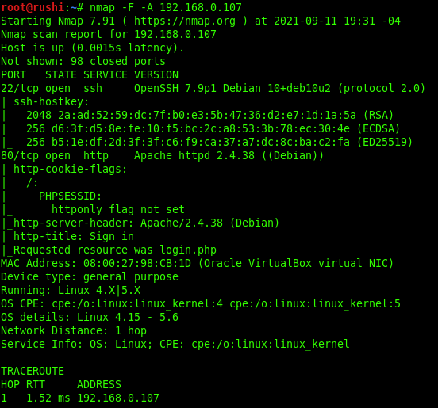As you can see in the image you will observe that the result obtain by it is the combination of multiple scan.
List Scan
When you want to scan multiple host to perform more than one scanning then ?iL option is used which support nmap to load the targets from an external file. Only you need to add all targeted IP in a text file and save it at a location.
Syntax:
nmap -iL [file-path.txt]
To load the targets from the file targets.txt, the following command can be used:
Command:
nmap -iL /tmp/targets/ip-list.txt
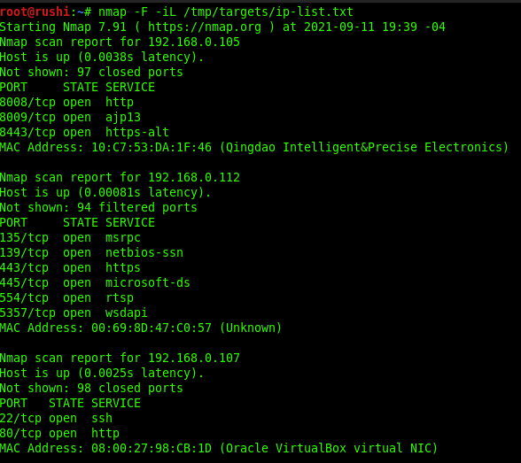Inside text FIle:
Output all formats
Sometime CLI(comman line interface) output which is on terminal is very confusing and if you wanted to impliment nmap scanning results in your writeup's, projects or reports then you might need a proper result, so with the help of -oA flage you will get output result in all formats like in .txt, .xml, .nmap, etc.
Syntax:
nmap [target-ip] -oA [output-file-location/file-name]
As you can see i stored those all inputs in a specific location by declearing path of that location and i named it as result
Command:
nmap 192.1612.0.107 -oA /tmp/targets/result]
Regular Scan
Normally i preferred to perform a full scan as shown below
Command:
nmap -sC -sV -T4 -p- [target-ip] -oA [output-file-location/file-name]
Flags used in above command:
-sC -Default Scripts
-sV -Enumerate all versions
-T4 -Timing Template "aggressive"
-p- -All ports (65535)
-oA -Output all formats
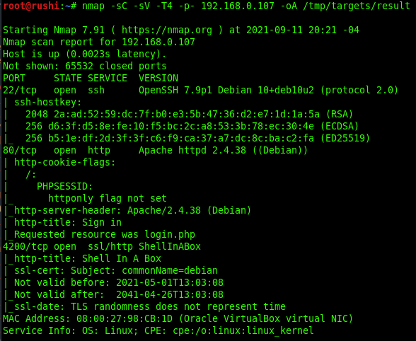Source:
I recommend to complete Nmap lab on TryHackMe https://tryhackme.com/room/furthernmap
@2021 Rushi0x04T7. Some rights reserved.